Art director · analys och förslag · 22 september 2026
En linje för hela Jobbcoach
Prissidan är den enda sidan som ser ut som en produkt någon har ritat. Inloggat läge har prissidans lugn men inte dess tyngd, och de publika sidorna har varken lugnet eller tyngden. Det här dokumentet visar vad prissidan gör, formulerar det som tio regler, och ritar om hemskärmen, två funktionssidor, header, megameny, footer och startsidans hero i samma linje. Opus 5.5 bygger efter godkännande, i den ordning som avsnitt 6 anger.
Ägaren, ordagrant: "Det inloggade läget ser rätt B ut, givet att simpelt också är bra och tydligt. Men det finns en viss schizofreni om man jämför egentligen alla våra sidor med /priser och den inloggade vyn. Landningssidan har ganska mycket saker i en helt annan stil, likaså alla andra sidor, ser vibecodat och plottrigt ut. Prissidan möter allt bäst: lite wow, snygga implementeringar, stil, custom svgs som lyfter sidan. Den inloggade sidan är som prissidan men utan allt det bra."
Underlag: Tråden v2 (docs/designsystem.md), den godkända prisspecen, onboardingspecen, konceptet och kritiken från 13 september, planen för inloggat läge, samt skärmdumpar av 13 verkliga ytor på desktop 1280 och Pixel 7 tagna 22 september mot ett produktionsbygge. Ägarens egen skärmdump av hemskärmen är facit för tillstånd C. Alla tal i skisserna är ägarens riktiga tal ur den skärmdumpen; rader som inte kan härledas ur den är märkta "exempel".
1 · Diagnosen
Tre sidor, tre olika produkter
Samma tokens, samma typsnitt i grunden, ändå tre uttryck. Prissidan har hierarki, scener och rytm. Hemskärmen har tokens och lugn men ingen tyngd. Startsidan har gradienter, ikoncirklar och sju rubriknivåer i samma vikt.
/priserdesktop 1280, byggd sida
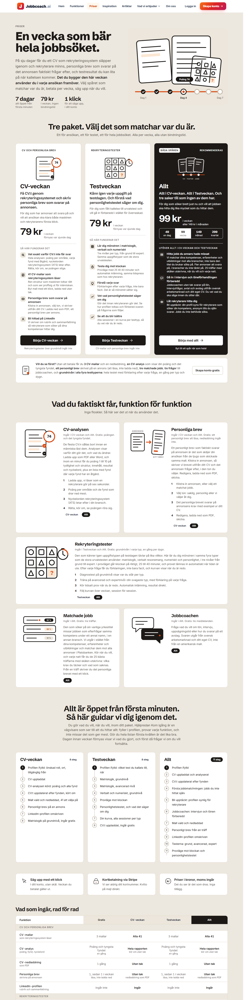
Gör rätt. Display-rubrik i 60, en scen som visar veckan på skrivbordet, Allt-kortet i bläck, värdemeningar före funktionslistor, växlande sektionsformer.
/dashboardägarens skärmdump, tillstånd C
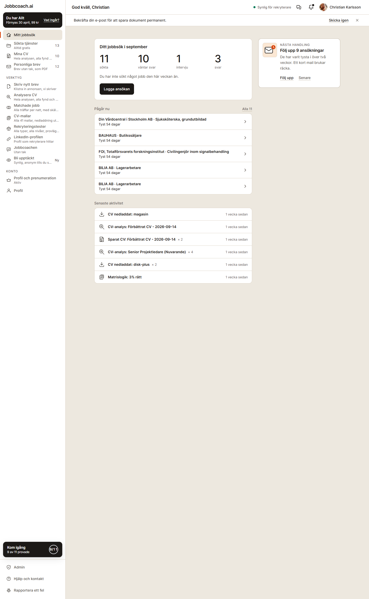
Rätt tokens, ingen tyngd. Ingen rubrik över 16 px i innehållet, fyra tal utan mening, två listor som läses som loggar, tretton menyval i samma vikt.
/desktop 1280, startsidan
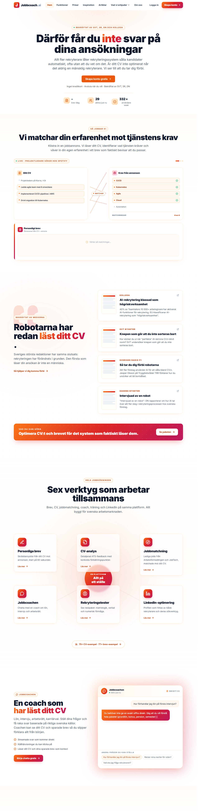
Ett tredje system. Gradient i rubrikord, knapp och bakgrund, Lucide-ikoner i orange rutor, font-black överallt, ingen scen, sju sektioner med samma form.
Fem grepp som prissidan gör och de andra inte gör
1
Typografisk hierarki med display-snitt
Schibsted Grotesk 800 i 60 px på desktop, 32 på mobil, sedan 40 för sektioner, 30 för kortnamn, 18 för värdemeningen. Hemskärmen toppar på Inter 16/600 ("Ditt jobbsök i september"), sidrubriken "God kväll, Christian" är en topprad i 16. Startsidan har font-black i 68 men i Inter, med gradientord, så tyngden blir buller i stället för hierarki.
2
Illustrationer som visar produkten
Åtta scener i 240×200 och en hero i 520×400 som visar CV:t med poäng, matrisen, brevet mot annonsen. Hemskärmen har en 56-platta med ett kuvert. Startsidan, Funktioner, verktygssidorna och Om oss har Lucide-ikoner i orange rundade rutor, tjugo till trettio per sida, alltså exakt det mönster Tråden förbjuder.
3
Bläckyta för det viktigaste
Allt-kortet är den enda fyllda ink-ytan, och därför läser ögat den först. På hemskärmen är alla fyra paneler vita med samma kant och radie, så Nästa handling (den viktigaste) väger lika mycket som "Senaste aktivitet" (den minst viktiga). Startsidan använder gradient i stället för bläck och får därmed ingen enda punkt som är tyngst.
4
Värde före funktion i texten
"En vecka som bär hela jobbsöket." "Vet exakt varför CV:t inte får svar." Rubriken säger vad du får, underraden vad sidan gör. Hubbarna gör tvärtom: "Rekryteringstester. Träna på de moment rekryterare faktiskt använder", "Byt design på ditt CV. Ditt innehåll, snyggare format." Funktion, sedan funktion igen.
5
Rytm mellan sektioner
Hero på mark, tre kort, en bred panel, en sektion med sex kort i två storlekar, tre guider, tre förtroenderader, en tabell. Ingen form upprepas två gånger i rad. Hemskärmen är panel, panel, lista, lista i samma bredd. Startsidan är sju centrerade sektioner med rubrik, ingress, kort, i samma takt, med en glöd bakom varje.
Hemskärmen, brist för brist
Ur ägarens skärmdump, i den ordning ögat möter dem.
Sex likadana vita ytor i följd. Jobbsök-panelen, Nästa handling, Pågår nu (fem rader i en panel) och Senaste aktivitet (sex rader i en panel) har samma vita fyllning, samma kant, samma radie och samma inre marginal. Inget är tyngre än något annat, så inget leder blicken.
Statistik utan sammanhang. 11, 10, 1, 3 står som fyra lösa tal med etiketter. Att 10 av 11 väntar svar och att 9 av dem varit tysta i över två veckor är det som betyder något, och det står i en annan panel.
Senaste aktivitet som loggrader. "CV-analys: Senior Projektledare (Nuvarande) × 4", "Sparat CV: Förbättrat CV - 2026-09-14 × 2", "Matrislogik: 3 % rätt". Det är systemets händelselogg, inte något som talar till användaren, och alla sex rader säger "1 vecka sedan".
Pågår nu som lista utan innebörd. Fem rader med "Tyst 54 dagar" utan att raden erbjuder något att göra, trots att panelen ovanför ber användaren följa upp just dem.
Sidomenyn med tretton val i samma vikt, alla med en underrad i 12 px, plus paket-huvud, Kom igång-platta, Admin, Hjälp och Rapportera ett fel. Mitt jobbsök och Rapportera ett fel har samma ikonstorlek, samma textstorlek, samma höjd.
Ingen illustration. Vyns enda bildyta är en 56-platta med ett kuvert, i tillstånd C. Prissidan ger en scen per kort.
Ingen rubrik med tyngd. "God kväll, Christian" sitter i toppraden i 16/600. Innehållet börjar med en kortrubrik. Sidan saknar en h1 i ordets visuella mening.
Två gula meddelanderader ovanför allt (bekräfta e-post, plus "Synlig för rekryterare" i toppraden) tar den första skärmhöjden innan innehållet börjar.
Det som är rätt i inloggat läge och inte får förloras
Lugnet. Mark, panel och insunken utan skugga eller gradient. En primär knapp per vy, i bläck. Orange bara som tråd.
Tydligheten. Nästa handling finns och är rätt (uppföljning först). Sökta tjänster är kärnan. Statusrader är rader, inte kort. Kom igång-raden ligger i sidomenyn, inte över innehållet.
Tråden. Aktiv menyrad med 3 px, laddning som en linje, fokusring i accent. Det är systemets enda betydelsebärande linje och det ska förbli så.
Ikonerna. Tolv egna motiv i 24 med asymmetri. De behöver inte ritas om, de behöver bara sluta stå bredvid en underrad som tar bort deras luft.
Alla ytor i samma tabell
Skärmdumparna är tagna 22 september mot produktionsbygget. Den femte kolumnen är det som ska behållas från ytan som den ser ut i dag.
Yta
Vad den gör i stället för prissidan
Konkret i skärmdumpen
Behåll
Hemskärm
Fyra vita ytor i samma vikt, tal utan mening, listor som loggar
Se listan ovan
Lugnet, Nästa handling, statusrader
Sidomeny
Tretton val i samma vikt, alla med underrad; Verktyg är en lista på åtta
"Mitt jobbsök" och "Rapportera ett fel" har samma vikt. Underraderna klipps ("Hela analysen, alla fynd och ...")
Paket-huvudet i bläck, tråden, Kom igång-raden, egna ikoner
Rekryteringstester
Sexton nästan identiska rader i fyra likadana paneler
Varje kategori: etikett, tre meningar, fyra rader med "15 frågor · ca 20 min". Rekommendationskortet i mitten är rätt idé men vitt som allt annat
Tidslinje i orange, tre gånger tre kort, en gradientpanel i slutet; enda illustrationen är en linjegraf i orange cirkel
Fjorton ikonkort på en sida
Berättelsen cvbrev till Jobbcoach, tre löften, talen 332+ och 247+
Megamenyn i dagdesktop
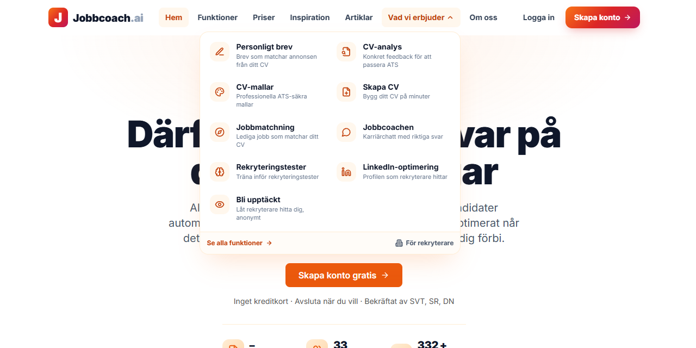
Footern i dagdesktop
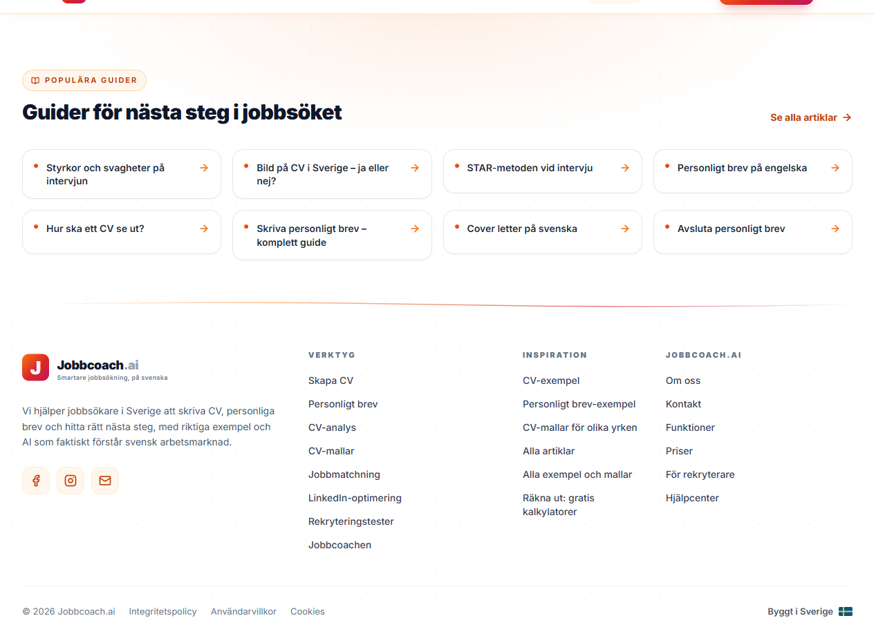
Mobilmenyn i dagPixel 7
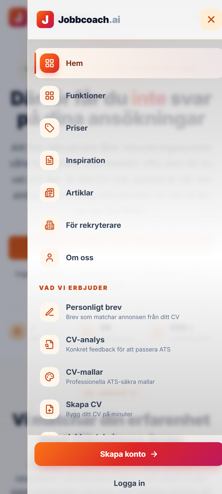
/funktionerdesktop
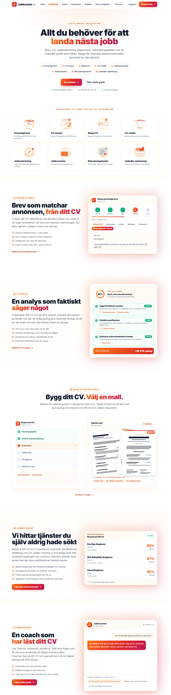
/verktyg/cv-analysdesktop
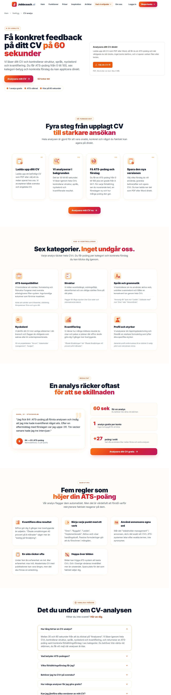
/om-ossdesktop
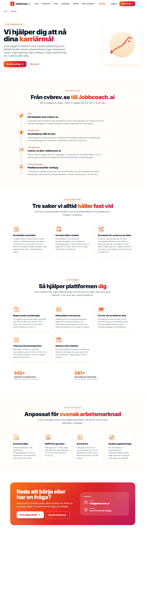
Artikelramdesktop
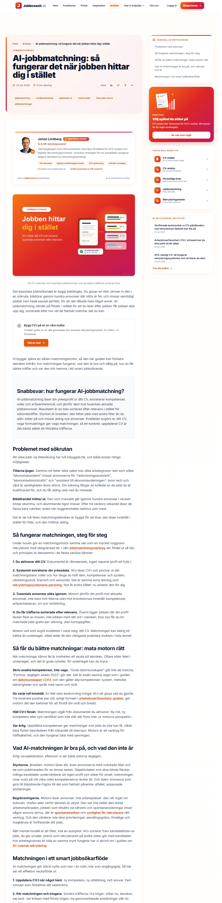
/dashboard/testerdesktop, QA-konto med Allt
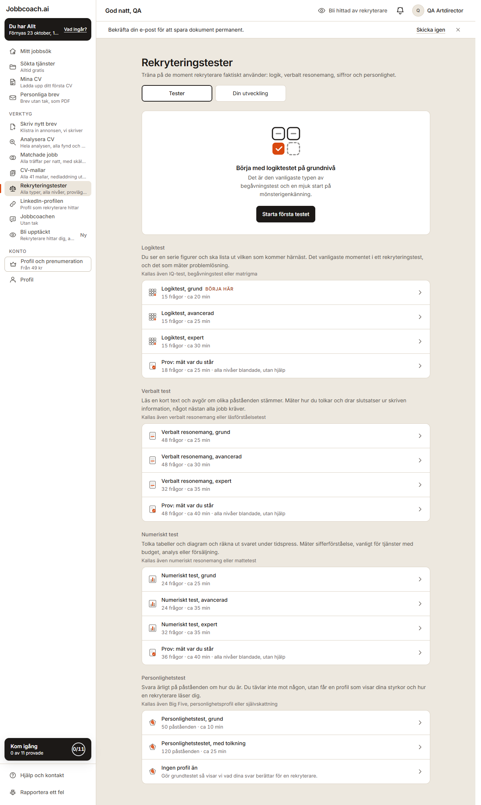
/dashboard/cv-mallardesktop, QA-konto med Allt
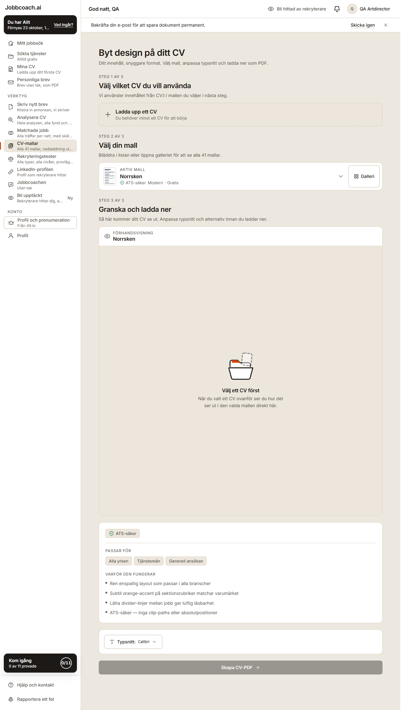
Fler dumpar i mappen docs/design/analys-visuell-linje-2026-09-22: alla tretton ytor på Pixel 7 och desktop, samt prisspecen som referens.
2 · Principen
Tio regler som utökar Tråden utan att bryta den
Tråden v2 svarar på "hur hänger ytorna ihop". Reglerna nedan svarar på "vad är tyngst på varje yta". De gäller inloggat och publikt lika, och de förutsätter allt som redan står i designsystemet: tokens, orange högst tre per skärm, en primär knapp, ingen skugga på det som står stilla.
Display-snittet bär varje sidrubrik
Varje vy har exakt en h1 i Schibsted Grotesk 800: 32/35 på mobil, 44/46 på desktop i inloggat läge, 60/60 på publika sidor. Sektionsrubriker på publika sidor är 40/44 i 700. Etiketter, brödtext, knappar och menyn förblir Inter. Ingen annan text tar display-snittet utom stora tal och värdemeningar (18/24, 600).
Varje vy med sidhuvud eller framhävt element får en scen i 240×200 ur PriserScener-familjen (eller en ny i samma språk). Scenen visar vad verktyget gör med användarens material: ett CV med poäng, en matris, ett brev som möter annonsen. Aldrig en ikon i ruta, aldrig två scener, aldrig ovanpå text. Tomt tillstånd behåller 96, marginalplattan 48 behålls bara i listrader och betalväggar.
Ändrar: §7 "Tre storlekar" blir fyra: 24, 48, 240×200 (scen), 520×400 (hero). PriserScener flyttar från "prissidan" till systemnivå.
Bläckyta för nästa handling
Exakt en fylld ink-1-yta per vy, och den bär vyns viktigaste handling eller erbjudande: Nästa handling på hemskärmen, rekommendationen i en hubb, Allt-kortet på prissidan, mediebevisen på startsidan. Vit knapp på bläck, sekundärt som textlänk i ink-1-mjuk. Två bläckytor på samma skärm är ett fel, oavsett skärmstorlek.
Ändrar: §6 ny komponent InkPanel { eyebrow, title, text, action, secondary?, scene? } med tonerna från §12 punkt 2. Nästa handling byter från upphöjd panel till InkPanel.
Aldrig fler än tre ytor i samma vikt i följd
Tre paneler med samma fyllning, kant och radie får följa på varandra. Den fjärde byter form: en lista direkt på mark, en statusrad, en bläckyta, en scen, eller text utan ram. Det gäller kort i ett rutnät lika mycket som paneler i en kolumn.
Ändrar: §4 nytt stycke "Följd", med räkneregeln. Grep-kontroll: fyra rounded-xl border border-kant bg-panel som syskon i följd är en träff.
Ett tal står aldrig ensamt
Ett stort tal bär alltid en mening som säger vad det betyder: "11 sökta i september. 10 väntar svar, 9 av dem tysta i över två veckor." Fyra tal i rad med varsin etikett är förbjudet. Där en fördelning finns ritas den som en segmentrad under talet, med text som förklarar segmenten.
Ändrar: §6 "Stort tal" får en obligatorisk mening; ny komponent Fordelning (segmentrad med legend).
Rader är innehåll, inte loggar
En rad i en lista säger vad som hände i användarens ord, med subjekt och verb, och erbjuder nästa steg: "Sökt för 54 dagar sedan, inget svar än. Följ upp." Systemets etiketter ("CV-analys: … × 4", "Matrislogik: 3 % rätt") är förbjudna som radtext. Händelser grupperas per ärende eller per dag, aldrig per händelsetyp.
Ändrar: §6 "Panel, lista och sektionsrubrik" får radregeln; §13 copy: "en rad har subjekt, verb och nästa steg".
Värde före funktion
Sidrubriken säger vad användaren får, underraden vad sidan gör. "Känn igen uppgiften innan provdagen" över "Rekryteringstester", inte tvärtom. Det gäller hubbar, verktygssidor, megamenyns grupper och footerns kolumner.
Ändrar: §13 copy, redan delvis där ("underraden säger vad sidan gör"); rubrikregeln läggs till. Kräver copywriteragenten per yta.
Navigation har vikt och grupper
Sidomenyn har högst fyra val i tung vikt (Mitt jobbsök, Sökta tjänster, Mina CV, Personliga brev) med antal, sedan Verktyg i tre namngivna grupper (Skriv och förbättra, Hitta jobb, Träna) i lättare vikt, sedan Konto. Underrader försvinner ur menyn: vad som ingår står i sidhuvudet på respektive sida och i "Vad ingår?". Publik header: fem val i Inter 15/500, ett i aktiv insunken yta, en bläckknapp.
Ändrar: plan-inloggat-omdesign §3 (sidebar), paket-rader.ts menyRad slutar producera underrader för menyn. Ny §9-punkt: högst fem val i samma vikt.
Rytm: växla yta, bredd och höjd
Två sektioner i följd får inte ha samma form. Mark, panel, bläck, mark. Bred, tvåkolumn, smal. Publika sidor följer alltid: hero på mark med scen, en panel med produktbild, en bläckyta, sedan kort (högst tre), sedan lista, sedan FAQ på mark. Inga glödar, prickmönster, vågor eller bakgrundscirklar bakom någon sektion.
Ändrar: §12 skrivs om från "tas senare" till "samma system", med sektionsföljden som mall. --jc-gradient-* tas bort ur globals.css.
Orange är fortfarande linje och bläck, överallt
Räkneregeln (högst tre per skärm) gäller nu även publikt. Ingen gradient någonstans, inte i knappar, rubrikord, bakgrunder eller delare. Publika CTA:er är bläck. Logotypens #F97316 behålls som enda undantag. Färgetiketterna cv och test finns kvar där paketen nämns.
Ändrar: §10 förbjudna mönster gäller src/components/landing, src/components/Footer.tsx, src/app/(public). Grep-kommandot i §10 utökas med de katalogerna.
Sammanfattning av vad som ändras i docs/designsystem.md
§3 Typskala:text-h1 blir display 32/35/800 mobil och 44/46/800 desktop; ny text-h1-pub 60/60/800; ny text-h2-pub 40/44/700; ny text-varde 18/24/600 display.
§4 Djup: nytt stycke "Följd": högst tre ytor i samma vikt efter varandra.
§6 Komponenter:InkPanel, Fordelning, PageHeader får scene? och ritar scenen i egen kolumn från lg. "Stort tal" kräver mening. Radregeln.
§7 Illustrationer: fyra storlekar, PriserScener som systemfamilj, scenregeln "visar produkten med användarens material".
§9 Tillgänglighet: högst fem navigationsval i samma vikt; grupper har rubrik.
§12 Publika sidor: skrivs om till "samma system", med sektionsföljden. Gradient och navy/pink tas bort ur tailwind.config.js när sista publika ytan är gjord.
Talen är ägarens: 11 sökta, 10 väntar svar, 1 intervju, 3 svar, 9 tysta i över två veckor, ingen ansökan den här veckan. Aktiviteten är hans sex loggrader omskrivna till tre meningar. Raden under rubriken som säger vad som hänt sedan sist går inte att härleda ur skärmdumpen och är märkt exempel.
Pixel 7 · 412 px · /dashboard
Jobbcoach.ai
Måndag 22 september
God kväll, Christian.
Sedan i går: inget nytt svar. Intervjun med Din Vårdcentral ligger kvar som nästa steg. (exempel på sammanhangsrad)
Nästa handling
Följ upp 9 ansökningar
De har varit tysta i över två veckor. Ett kort mail brukar räcka, och vi skriver utkastet från din ansökan.
Följ uppSenare
11sökta i september
9 tysta över två veckor1 väntar svar1 intervju
3 svar hittills. Du har inte sökt något jobb den här veckan än.
Du analyserade två CV:n sex gånger och sparade Förbättrat CV.
Senior Projektledare fick fyra körningar. Poängen syns under Mina CV.
Du laddade ner CV:t i mallarna Magasin och Disk-plus.
Tre nedladdningar, alla som PDF.
Du gjorde logiktestet på grundnivå, 3 procent rätt.
Kör det igen med tid kvar, så ser du mönstren.
Kör igen
Så här läses den: rubrik med tyngd och en rad sammanhang, en bläckyta som är det enda tunga elementet, ett tal med fördelning i stället för fyra tal, Pågår nu som rader direkt på mark med nästa steg i varje rad, veckan som tre meningar i stället för sex loggrader. Sidomenyn: fyra tunga val med antal, åtta verktyg i tre grupper utan underrader, Kom igång och Hjälp i foten. Meddelanderaden om e-post flyttar till en statusrad under rubriken när den behövs, inte ovanför allt.
Vad som bevaras från dagens hemskärm
Ordningen (Nästa handling, jobbsöket, Pågår nu, aktivitet) är densamma. Rankningen i useNextBestAction rör vi inte. Tillstånd A behåller IlluArketLyfter i 240 och tillstånd B behåller sin panel, men får display-h1 och scen i stället för platta. Trialraden och kvotraden är fortfarande StatusRow. Orange förekommer två gånger: tråden i menyn och accentpunkten i scenen. Ingen underrad i menyn betyder att "Vad ingår?" i paket-huvudet blir det ställe som säger vad som ingår, tillsammans med sidhuvudet på varje sida.
4 · Två funktionssidor omritade
Linjen bär inne i produkten också
Rekryteringstester och CV-mallar är de två ytor där dagens uttryck är som mest "lista på lista". Båda får display-rubrik med värde före funktion, en scen ur PriserScener som redan finns, en bläckyta för rekommendationen, och kategorier som inte är fyra likadana paneler.
Rekryteringstester, hubben
Pixel 7 · /dashboard/tester
Jobbcoach.ai
Rekryteringstester
Känn igen uppgiften innan provdagen.
Logik, verbalt, numeriskt och personlighet, i samma format som Assessio, cut-e och SHL. Alla nivåer ingår i Allt.
Börja här
Logiktestet på grundnivå
Den vanligaste typen av begåvningstest och en mjuk start på mönsterigenkänning. 15 frågor, cirka 20 minuter.
Starta första testet
TesterDin utveckling
Logiktest
Vilken figur kommer härnäst?
Det vanligaste momentet i ett rekryteringstest. Kallas även IQ-test eller matrigma.
Grund · 20 minAvanceradExpertProv
Verbalt test
Stämmer påståendet med texten?
Mäter hur du tolkar skriven information. Nästan alla jobb kräver det.
Grund · 25 minAvanceradExpertProv
Numeriskt test
Läs tabellen och räkna under tid.
Vanligt för tjänster med budget, analys eller försäljning.
Grund · 25 minAvanceradExpertProv
Personlighetstest
Grundtestet, 50 påståenden, 10 min
Du tävlar inte mot någon. Du får en profil som visar hur en rekryterare läser dig.
Med tolkning, 120 påståenden, 25 min
Gör grundtestet först, så låser den upp.
Desktop 1280 · /dashboard/tester
Träna · Rekryteringstester
Christian Karlsson
Rekryteringstester
Känn igen uppgiften innan provdagen.
Logik, verbalt, numeriskt och personlighet, i samma format som Assessio, cut-e och SHL. Alla nivåer ingår i Allt.
TesterDin utveckling
Logiktest
Vilken figur kommer härnäst?
Det vanligaste momentet. Kallas även IQ-test eller matrigma.
GrundAvanceradExpertProv
Verbalt test
Stämmer påståendet med texten?
Mäter hur du tolkar skriven information.
GrundAvanceradExpertProv
Numeriskt test
Läs tabellen och räkna under tid.
Vanligt för tjänster med budget, analys eller försäljning.
GrundAvanceradExpertProv
Personlighetstest
Grundtestet, 10 min
En profil som visar hur en rekryterare läser dig.
Med tolkning, 25 min
Låses upp av grundtestet.
Börja här
Logiktestet på grundnivå
Den vanligaste typen av begåvningstest och en mjuk start på mönsterigenkänning. 15 frågor, cirka 20 minuter.
Starta första testet
Fyra kategorier, men bara tre paneler i samma vikt: personlighetstestet står som rader direkt på mark, både för att regel 4 kräver det och för att det inte har nivåer. Nivåerna är ett segment per kategori i stället för fyra rader, och ett gjort test markeras i segmentet (ink-kant). Sexton rader blev tolv val på en skärmhöjd. Grå nivåer utanför paketet visas i insunken med lås, som i dag.
CV-mallar
Pixel 7 · /dashboard/cv-mallar
Jobbcoach.ai
CV-mallar
Samma innehåll, en mall rekryteraren läser.
Välj ett CV, välj en av 41 mallar, ladda ner som PDF. Alla klarar rekryteringssystemens läsning.
Stegen får olika vikt: steg 1 är en statusrad (det är redan gjort när man har ett CV), steg 2 är sidans innehåll med riktiga miniatyrer i stället för en dropdown, steg 3 är förhandsvisningen som papper på panel. Förhandsvisningen är aldrig tom: utan valt CV visas mallen med exempeltext. Mallnamnen är ur registret (Norrsken, Aurora, Atlas, Galleri, Pedagog); gråa mallar utanför paketet visas i insunken med lås som i dag. Ingen bläckyta här: den primära knappen är vyns enda tunga element, och sidan har redan en scen.
5 · Publika ytor
Header, megameny, footer och startsidans hero
Header och footer syns på varje sida en besökare når, så de bär mest sammanhang per timme byggtid. Analysen per yta står i tabellen i avsnitt 1. Här är skisserna. Copyn i heron är dagens, eftersom rubrikens budskap är rätt; copywriteragenten tar ingress och bevis i nästa steg.
Header och megameny
Desktop 1280 · header med "Vad vi erbjuder" öppen
JJobbcoach.ai
Logga inSkapa konto
Skriv och förbättra
Personligt brev
CV-analys
Skapa CV
CV-mallar
LinkedIn-profilen
Hitta jobb
Jobbmatchning
Bli upptäckt
Träna
Rekryteringstester
Jobbcoachen
Räkna ut lön och skatt
Allt i en vecka, 99 kr
CV, brev, tester, matchning och coach. Säg upp med ett klick.
Se paketen
Alla funktionerFör rekryterare
Fem val i Inter 15, aktivt val i insunken yta, bläckknapp. Megamenyn är en panel med tre namngivna grupper (samma som sidomenyn), nakna ikoner i 24 ur Ikoner.tsx utan rutor, och en sidokolumn i insunken med en scen och paketets värdemening. Inga beskrivningar per rad: gruppens namn är beskrivningen. Räkna ut-hubben får plats i Träna, eftersom den i dag saknas i navigationen helt.
Pixel 7 · mobilmeny öppen
JJobbcoach.ai
Skapa konto
Funktioner
Priser
Artiklar
Om oss
Skriv och förbättra
Personligt brev
CV-analys
Skapa CV
CV-mallar
LinkedIn-profilen
Hitta jobb
Jobbmatchning
Bli upptäckt
Träna
Rekryteringstester
Jobbcoachen
Räkna ut lön och skatt
Logga inFör rekryterare
Mobilmenyn: fyra huvudval i 16/500, tre grupper med 44 px rader utan ikoner, "Skapa konto" i headern så att den inte behöver ligga sticky i menyns fot. Ingen blur, ingen orange kant, inga ikonrutor.
Startsidans hero och de två första sektionerna
Desktop 1280 · /
JJobbcoach.ai
Logga inSkapa konto
Bekräftat av SVT, SR, DN och Kollega
Därför får du inte svar på dina ansökningar
Allt fler rekryterare låter rekryteringssystem sålla kandidater automatiskt, ofta utan att du vet om det. Är ditt CV inte optimerat når det aldrig en människa. Vi ser till att du tar dig förbi.
Skapa konto gratisSe hur det fungerar
332+har skapat konto
1 brevom dagen, gratis
60 sektill första CV-poängen
Så jobbar vi
Vi matchar din erfarenhet mot tjänstens krav
Klistra in en jobbannons. Vi läser ditt CV, identifierar vad tjänsten kräver och väver in din egen erfarenhet i ett brev som faktiskt bevisar att du passar.
Skriv ett brev gratisEtt brev om dagen utan konto att betala
Bekräftat av medierna
Robotarna har redan läst ditt CV
Sveriges största redaktioner har samma slutsats: rekryteringen har förändrats i grunden. Den första som läser din ansökan är inte en människa.
Så hjälper vi dig komma förbi
KollegaAI-rekrytering klassad som högriskverksamhet
SVT NyheterKnepen som gör att du inte sorteras bort
Sveriges Radio P1Så tar du dig förbi robotarna
Dagens NyheterIntervjuad av en robot
Heron är prissidans hero i ny scen: eyebrow, display-h1 i 60 utan gradientord, ingress med en fetad mening, bläckknapp plus textlänk, tre bevis i display-tal (332+ är ägarens tal från Om oss; "1 brev om dagen" och "60 sek" är produktens egna löften och kan bytas av copywriteragenten). Scenen visar ansökan som går genom sållet, 520×400, en accent. Sektion två är en panel med produktscen till höger. Sektion tre är sidans enda bläckyta, och mediebevisen är rader på bläck i stället för fyra kort med falska tidningsbilder. Efter den: tre verktygskort (inte sex), en lista, prisdelen som återanvänder PaketKort, FAQ på mark.
Footer
Desktop 1280 · footer
Footern står på mark med en hårlinje, fyra kolumner med samma tre grupper som menyn plus Läs, ingen glöd, inga prickar, ingen våg, inga guidekort. De åtta populära guiderna flyttar till artikelsidornas "Relaterade artiklar" där de gör nytta. Sociala länkar som text i första kolumnen om de ska vara kvar.
Övriga publika ytor, i korthet
Funktioner: hero som startsidan, sedan en sektion per funktion i växlande form (panel med scen till höger, bläck för Allt, rader för det som är gratis). Åtta ikonkort och åtta piller försvinner; megamenyn är redan den listan.
Verktygssidorna (/verktyg/*): en gemensam mall: display-h1 med värde, scen ur PriserScener, den handling som går att göra direkt (ladda upp CV, klistra in annons) som panel i heron, "Så fungerar det" som tre rader med display-siffror (prissidans guide-mönster), "Vad vi kontrollerar" som en lista på mark i två kolumner, ett citat som panel, FAQ. Nio sidor, en mall.
Artikelram: artikelhuvudet på mark utan rosa glöd och prickar: kategori som eyebrow, display-h1 i 44, författare som en rad med bild i 40. Sidokolumnen blir en panel med innehållsförteckning och en bläckyta med paketet, inget tredje kortformat. Artikelbilderna följer bildstandarden och rör vi inte.
Om oss: berättelsen som en panel med tidslinje i ink (tråden får markera "nu"), tre löften som tre rader med display-siffror, talen 332+ och 247+ som display-tal med mening, fjorton ikonkort försvinner. En ny scen: skrivbordet från cvbrev till Jobbcoach.
6 · Insats och ordning
Vad Opus 5.5 bygger, i vilken ordning
Ordningen ger mest sammanhang först: det som syns på varje sida byggs innan det som syns på en. S är under en halvdag, M en dag, L två till tre dagar. Varje steg verifieras i riktig webbläsare på Pixel 7 och desktop enligt QA-standarden innan nästa börjar.
1
Grunden: typskala, InkPanel, Fordelning, PageHeader med scen
text-h1 till display i tailwind.config.js, nya klasser text-h1-pub, text-h2-pub, text-varde. InkPanel i src/components/shell med tonerna ur §12. Fordelning (segmentrad med legend). PageHeader får scene. Uppdatera docs/designsystem.md enligt avsnitt 2. Återanvänds: font-display från layout.tsx, ink-tonerna från PaketKort.
SInloggat + publikt
2
Header, megameny och mobilmeny
LandingNavbar skrivs om utan framer-motion och gradient: fem val, aktiv i insunken, bläckknapp, megameny som panel med tre grupper och sidokolumn med IlluScenAllt. Mobilmenyn utan blur och ikonrutor. Återanvänds: Ikoner.tsx, IlluScenAllt, knappstilen.
SPublikt
3
Footer
Footer.tsx utan glöd, prickar, våg och guidekort. Fyra kolumner på mark. Guiderna flyttar till relaterade artiklar. Återanvänds: inget behövs.
SPublikt
4
Sidomeny och mobilnav i inloggat läge
Sidebar.tsx: fyra tunga val med antal, tre verktygsgrupper, underrader bort, Kom igång och Hjälp i foten. menyRad i paket-rader.ts slutar leverera underrad till menyn men behåller texterna för sidhuvuden och "Vad ingår?". Admin-länken bara för admin-konton, längst ned.
SInloggat
5
Hemskärmen
DashboardHero får display-h1 och sammanhangsrad (kräver en liten summering: senaste svar, nästa intervju; om den saknas visas ingen rad). NastaHandling blir InkPanel med scen. JobbsokOversikt blir tal med Fordelning. PagarNu blir rader på mark med "Följ upp" per rad. SenasteAktivitet blir tre meningar per vecka, grupperade per typ av arbete (CV, nedladdning, test) med verb. E-postraden blir StatusRow under rubriken. Ny illustration: IlluScenUppfoljning.
MInloggat
6
Rekryteringstester, hubben
TesterHubClient: sidhuvud med scen (IlluScenMatris), rekommendationen som InkPanel, tre kategorier som paneler med nivåsegment, personlighet som rader. Din utveckling oförändrad bakom fliken. Grå nivåer och betalväggar oförändrade.
MInloggat
7
CV-mallar
CvMallarClient: sidhuvud med ny scen, steg 1 som StatusRow, steg 2 som miniatyrgrid (sex synliga plus galleri), steg 3 som papper på panel som aldrig är tomt. Ny illustration: IlluScenMallar. Miniatyrerna renderas ur mallregistret, inte som bilder.
MInloggat
8
Startsidan
Hero, matchningssektion, mediebevis i bläck enligt skissen, sedan tre verktygskort, en lista, prisdelen med PaketKort, FAQ. LiveAIShowcase, ToolsConstellation, DynamicCounters och RichFinalCTA tas bort. Ny illustration: IlluScenSallet (hero 520×400). Återanvänds: PaketKort, PriserScener, PriserFAQ-mönstret. Copywriteragenten: ingress, bevis, sektionsrubriker.
MPublikt
9
Verktygssidorna, en mall för nio
En serverkomponent VerktygsSida med hero (h1, scen, direkt handling), tre steg, kontrollista, citat, FAQ. Nio sidor byter till mallen med sin copy. Nya illustrationer: IlluScenLinkedin, IlluScenCoach finns, IlluScenMatch finns, IlluScenCv finns, IlluScenBrev finns, IlluScenMatris finns, IlluScenUpptackt, IlluScenSkapaCv.
LPublikt
10
Funktioner, artikelram, Om oss
Funktioner på verktygsmallens delar. Artikelhuvud och sidokolumn enligt avsnitt 5. Om oss med tidslinje i panel och en ny scen. Ny illustration: IlluScenSkrivbordet (Om oss). Därefter tas --jc-gradient-*, navy och pink bort ur globals.css och tailwind.config.js, och grep-kontrollen i §10 utökas till de publika katalogerna.
LPublikt
Nya illustrationer som behövs
Alla i PriserScener-språket: viewBox 240×200 (hero 520×400), stroke 6, konturer i currentColor, fyllning via --illu-fill, en accentyta högst en tiondel, ett rörligt element lutat 4 till 8 grader, inga bakgrundscirklar. Byggs som React-komponenter enligt primitives.tsx.
IlluScenUppfoljningEn hög ansökningar i en låda, ett brev lyfter ur högen lutat 6 grader, accentpunkt på brevet. Hemskärmens Nästa handling, uppföljning.240×200, fungerar på bläck (papper i ink-hover).IlluScenMallarTre CV-ark i solfjäder, det främsta med textrader och ett accentstreck där rubriken sitter. CV-mallar, hubb och verktygssida.240×200.IlluScenSalletEtt CV går in i ett såll av tre streckade spalter och kommer ut på andra sidan med en accentbock. Startsidans hero.520×400, egen kolumn till höger på desktop, under texten på mobil.IlluScenLinkedinEn profilsida med ett foto till vänster och en förstoringsglaslinje över rubrikraden; accent på det ord som hittas. Verktygssidan LinkedIn.240×200.IlluScenUpptacktEtt anonymt kort med maskade rader och ett öga som öppnas, accent i ögat. Bli upptäckt, publikt och inloggat tomt tillstånd.240×200. BliUpptacktIllustrations kan ersättas.IlluScenSkapaCvEtt tomt ark där tre rader skrivs in, en penna lutad 8 grader, accent på pennspetsen. Skapa CV, verktygssidan och tillstånd A om IlluArketLyfter ska bytas (rekommenderar inte).240×200.IlluScenSkrivbordetEtt skrivbord sett uppifrån: ett brev (cvbrev) till vänster, till höger CV, matris och brev samlade, accent på det senaste arket. Om oss.240×200 eller 520×400 om Om oss får en hero.IlluScenIntervjuTvå stolar mot varandra och ett ark mellan dem, accent på arket. Hemskärmen när nästa handling är en intervju, och Jobbcoachens tomma tillstånd.240×200. Behövs först när intervju-status finns i data.
Vad som återanvänds ur prissidan utan ändring
PaketKort och ink-tonerna (ink-1-mjuk, ink-1-kant, ink-1-accent) blir InkPanels grund. Startsidans prisdel använder PaketKort rakt av.
PriserScener: IlluScenCv, IlluScenMatris, IlluScenBrev, IlluScenMatch, IlluScenCoach, IlluScenAllt, IlluScenHero, IlluScenGratis, förtroendeikonerna och RadIkon. Sju av nio verktygssidor har redan sin scen.
font-display och skalan 60/40/30/18 med vikterna 800/700/700/600.
Guide-mönstret (display-siffra, rubrik, en mening) för "Så fungerar det" på verktygssidorna, och PriserFAQ för alla FAQ.
Färgetiketterna cv och test där paketen nämns, aldrig annars.
Samarbetspunkter
Copywriteragenten: värderubriker för nio verktygssidor, hubbarna och megamenyns sidokolumn; sammanhangsraden på hemskärmen; aktivitetsmeningarna (mall per händelsetyp med verb); startsidans ingress och bevis.
SEO-agenten: h1-byten på publika sidor får inte ändra ordvalet i titlar som rankar; heron behåller dagens h1-text. Verktygsmallen behåller HowTo-schema och FAQ-schema.
Ägaren: godkänna de tio reglerna och de tre bläckytorna (hemskärm, hubb, startsida) innan steg 1. Besluta om sociala länkar i footern ska vara kvar.
Analys och skisser: art director (Fable), 22 september 2026. Skärmdumpar tagna mot produktionsbygge på port 5213 med ett tillfälligt QA-konto (Allt) som raderades efteråt; kontrollerat i auth.users. Skisserna är HTML i Trådens tokens och inte pixelexakta specar: avstånd följer 4/8/12/16/24/32/48, radier 8 och 12, knappar 44. Inget i skisserna har byggts.